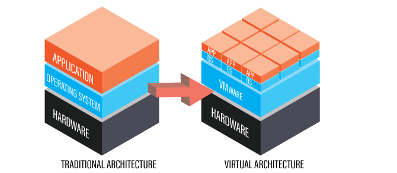

Les datacenters physiques sont limités par l'espace et par leur dépendance envers
le matériel et l'équipement. Aujourd'hui, les serveurs peuvent être virtualisés, la
puissance de calcul et la mémoire étant alors séparées du matériel sur une machine
virtuelle. Avec la virtualisation du datacenter, les administrateurs peuvent créer une
infrastructure de datacenter virtuel avec des serveurs distants pour partager et séparer
la charge de travail et de stockage.
Un datacenter virtuel nécessite moins d'équipement, moins d'alimentation et moins
d'espace qu'un datacenter physique traditionnel. Un datacenter virtuel peut également
accéder à ou "faire irruption dans" un Cloud public ou privé lorsque plus de ressources
de stockage ou de traitement sont nécessaires. Les datacenters virtuels sont également
nommée SDDC (Software-Defined Data Centers), car tous les services qu'ils fournissent,
y compris le réseau et le stockage, sont fournis par des logiciels plutôt que par du
matériel.

Les fournisseurs de services Cloud peuvent fournir des datacenters virtualisés en tant
que service, prenant à leur charge la gestion et l'exécution des opérations principales,
du réseau et du stockage d'individus et/ou de l'entreprise concernée. Ces fournisseurs
partagent des réseaux, un stockage et des serveurs virtuels parmi plusieurs autres entreprises,
en déplaçant l'espace de stockage et les charges de travail d'un serveur à l'autre selon
les besoins. Une entreprise peut également utiliser une partie de sa propre infrastructure
pour créer un Cloud privé dans le même objectif ou utiliser une combinaison de Clouds publics et
privés, que l'on nomme Environnement de Cloud Hybride.
Un datacenter virtuel peut co-exister avec un datacenter physique, s'exécutant en parallèle,
ou l'entreprise peut utiliser un équipement de datacenter virtuel pour exécuter un datacenter
entièrement virtuel. Une infrastructure hyperconvergée (HCI) intègre l'équipement informatique,
de stockage et de réseau aux logiciels de virtualisation et l'optimise pour qu'il s'exécute
comme un seul système. Avec une HCI, toutes les fonctions du datacenter s'exécutent sur des
logiciels étroitement intégrés au matériel. Cette approche orientée sur les logiciels perment
d'automatiser les tâches de stockage et les opérations qui nécessitaient auparavant un
ajustement manuel du matériel du serveur.
Pour plus d'informations sur le sujet, voici un vidéo que vous pouvez visionner pour agrandir
vos connaissances sur le sujet!